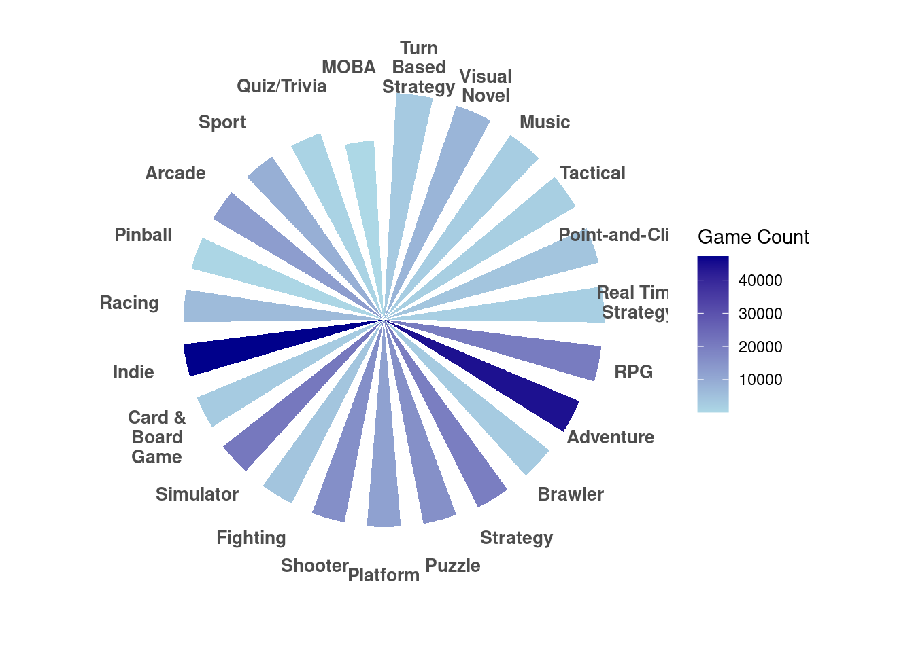
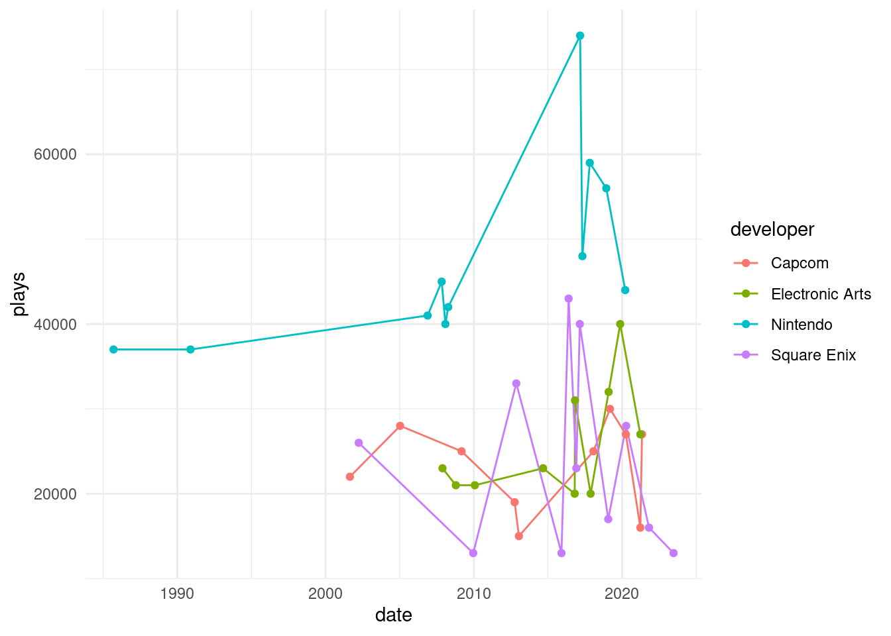
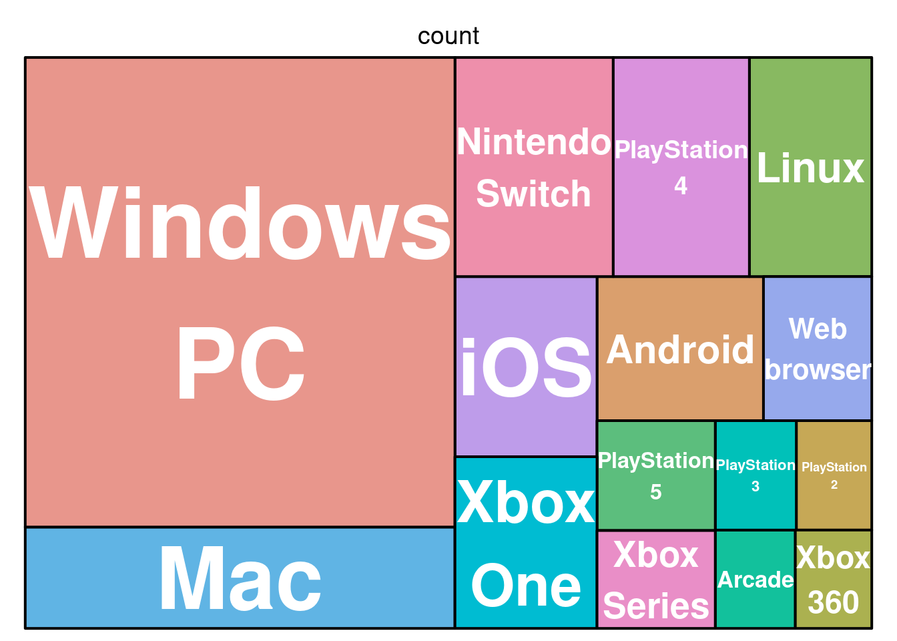

Introduction and Motivation
My favorite hobby is playing or watching video games. Growing up with three brothers, I spent much of my time watching them play video games. As I discovered I got older, I finally started playing them for myself. So when given the opportunity to make a fun, creative infographic, I wanted pay an homage to the entertainment that connected me with my brothers, offered me an escape, and allowed me to work for one of my favorite YouTube channels.
Goal and Questions
My goal with this infographic is to visualize the information that I gathered from the very expansive data set I found. I wanted make the graphic easily digestible for the general public and evoke recognition in the gaming set up. After exploring the data, I decided on three questions that I thought would be interesting: What is the distribution of gaming platforms?, what are the average rankings and game count of genres?, and How are popular are the top 4 game developers’ games?.
Data
I used an openly accessible Kaggle dataset that includes information about video game titles, genres, developers, platforms, and more, aggregated from Backloggd (the video game equivalent of Goodreads or Letterboxd).
Approach and Design
There were ten elements of the infographic that I needed to consider. They are the following:
- Graphic Form:
When I was testing out different variations of how to visualize my genre data, I realized that the radial bar chart resembles the fan often found in personal computers. So, I decided I wanted my infographic to look like the gaming set up the my brother has. I realized I would then need something to put on the monitor, and when I found a tree map, it seemed like the perfect way to incorporate the color scheme of Atari Breakout (a very famous old-school game). For my last visualization, I decided it would be a poster in the room and it could be anything. My last visualization was a time chart.
- Text:
My titles and legends are descriptive in order to make it clear what each chart is about. When a legend didn’t feel quite right, I added an annotation to help aide understanding.
- Themes:
As I explained in the graphic form section, the theme of the infographic is a modern video game setup with a monitor, pc (personal computer), and posters.
- Colors:
The theme of the whole infographic is blue and purple. I chose those because they give off very futuristic tech vibes. The colors on the tree map are vastly different because they were chosen to match what the game Atari Breakout looks like. I only had three rows, so the colors were red, orange, and yellow.
- Typography:
I had a lot of fun finding video game-esque fonts. I chose one that looks like pixels. For the tree map, I thought it would be a cool easter egg for each of the platforms’ font to match that brand’s font.
- General Design:
The original design included more aesthetic additions that would be in a bedroom. For example, there was a gaming chair and a trophy. But as I added the visualizations and takeaways, those were removed so that the infographihc didn’t have to be too large.
- Contextualizing:
I didn’t really contextualize the data because most of the data is generally understood. For example, with the genre chart, even if someone hasn’t played all those genres, they are common adjectives, so I think they make sense.
- Centering your primary message:
I didn’t really have a primary message. All three graphics are equally important, so they’re located on the left, with their takeaways to the right of them.
- Considering accessibility:
My graphich could definitely be more accessible to color blindness, so if I were to redo, I would change the colors. I think they tend to be the similar colors of varying depths, which could help because the color is either light or dark.
- Applying DEI:
Because the data came from an aggregated data set from a reviewing website called Backloggd, I don’t have any information from the people who submitted their game logs. I think applying a DEI lens is less applicable to my infrographic, but I would be interested to see if there were other thoughts.
Final Infographic
Code
Load Libraries
Show the code
library(here)
library(tidyverse)
library(janitor)
library(scales)
library(treemap)Read in Data
Show the code
games <- read_csv(here("posts", "video_games", "data", "games.csv")) %>% # keep only one observation of each game name
distinct(name, .keep_all = TRUE)
genres <- read_csv(here("posts", "video_games","data", "genres.csv"))
scores <- read_csv(here("posts", "video_games","data", "scores.csv"))
platforms <- read_csv(here("posts", "video_games","data", "platforms.csv"))
developers <- read_csv(here("posts", "video_games","data", "developers.csv"))Radial Bar Chart
Data Wrangling
Show the code
games_small <- games %>%
select(c("id", "rating", "name"))
genres_ratings <- left_join(games_small, genres, by = "id")
adventure <- genres_ratings %>%
filter(genre == "Adventure")
genre_avg_scores <- genres_ratings %>%
group_by(genre) %>%
summarise(avg_rating = mean(rating, na.rm = TRUE),
game_count = n())%>%
arrange(desc(avg_rating)) %>%
mutate(
genre = factor(genre, levels = genre)) %>% # Preserve order for plotting
filter(genre != "NA") Visualize
Show the code
# Radial bar chart with bar length for avg_rating and color intensity for game count
ggplot(genre_avg_scores, aes(x = genre, y = avg_rating, fill = game_count)) +
geom_bar(stat = "identity", width = 0.6) + # Adjust bar width
coord_polar(start = 0) + # Polar coordinates
scale_fill_gradient(low = "lightblue", high = "darkblue") + # Gradient for game count
labs(
title = NULL,
x = NULL,
y = NULL,
fill = "Game Count" # Update legend for clarity
) +
scale_x_discrete(labels = label_wrap(10)) + # Wrap genre labels
theme_minimal() +
theme(
axis.text.x = element_text(size = 10, face = "bold", hjust = 0.1), # Rotate labels
axis.text.y = element_blank(), # Remove radial grid text
plot.title = element_text(size = 16, face = "bold", hjust = 0.5),
panel.grid.major = element_blank(),
plot.margin = margin(b = 20, t = 20)
)
Time plot
Data Wrangling
Show the code
# Join developers
developer_games <- left_join(developers, games, by = "id") %>%
na.omit()
# Aggregate data by Developer and calculate total plays
top_developers <- developer_games %>%
group_by(developer) %>%
summarise(total_plays = sum(plays, na.rm = TRUE)) %>%
arrange(desc(total_plays)) %>%
slice(1:5) # Select the top 5 developers
# View the result
print(top_developers)
developer_games <- developer_games %>%
filter(developer %in% c("Nintendo", "Electronic Arts", "Capcom", "Square Enix", "Sony Computer Entertainmen"))
developer_top_games <- developer_games %>%
group_by(developer) %>%
slice_max(order_by = plays, n = 10) %>%
ungroup() # Ungroup after filteringVisualize
Show the code
ggplot(developer_top_games, aes(x = date, y = plays, color = developer)) +
geom_line() +
geom_point() +
theme_minimal()
Treemap Plot
Data Wrangling
Show the code
platform_count <- platforms %>%
group_by(platform) %>%
summarize(count = n(), na.rm = TRUE) %>%
arrange(desc(count)) %>%
slice(1:15)Visualize
Show the code
treemap(platform_count,
index = "platform",
vSize = "count",
type = "index", # Use index-based coloring
border.col = "black", # Thin white borders
#fontsize.labels = c(70, 20), # Adjust font size for labels
fontcolor.labels = "white", # Make labels visible
align.labels=c("center", "center"),
inflate.labels = TRUE, # Force labels to fit
format.legend = list(scientific = FALSE, big.mark = " "))
Citation
BibTeX citation:
@online{wong2026,
author = {Kimmy Wong},
title = {Pixels and {Preferences:} {The} {Ultimate} {Gamer’s}
{Landscape}},
date = {2026-02-03},
url = {https://kimberleewong.github.io/posts/environmental_redlining/environmental_redlining_blog.html},
langid = {en}
}
For attribution, please cite this work as:
Kimmy Wong. 2026. “Pixels and Preferences: The Ultimate Gamer’s
Landscape .” February 3, 2026. https://kimberleewong.github.io/posts/environmental_redlining/environmental_redlining_blog.html.